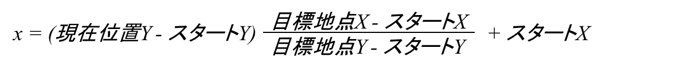
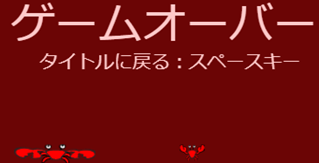

開催報告
Scratchお題『ミサイルコマンド』
Scratchプログラミング初心者向けの教材。二次元方程式を使った隕石や花火の移動。何がどうやって動くのか全体や先の行動を考えてプログラムを組んでいくロジックを考える。
体験できること
■ 学校で学ぶ方程式を使う。
■ ロジックを考える。
何がどうやって動くのか全体や先の行動を考えて、プログラムを組んでいく。
1. マウスを押したら、発射台から[花火玉]を打ち上げる
↓
2. [花火玉]が目的の場所まで打ち上ったら爆発する
↓
3. [隕石]が落ちてくる
↓
4. [花火玉]と[隕石]がぶつかる
↓
5. [隕石]が破壊される
↓
6. [発射台]と[隕石]がぶつかる
↓
7. [発射台]が壊れてゲームオーバー
ステップ１．花火玉と発射台を作る
新しいScratchプロジェクトを「作る」
最初から存在する［スプライト１］を選び、設定を変更する。

新しいスプライト「発射台」を作る
１）スプライトの名前を「発射台」に変える。
２）新しいコスチュームを選ぶ（カニを選んだ）。
３）最初から存在するコスチュームのネコは消しておく。
４）「発射台」の大きさは[50]%、X座標は[0]、Y座標は[-170]にする。
新しいスプライト「花火玉」を作る（大きさ[40]%）
新しい変数を作る（［このスプライトのみ］を選ぶこと）
１）スタートX
２）スタートY
３）目標地点X
４）目標地点Y
５）現在位置X
６）現在位置Y

スプライト「花火玉」がクローンされたときのプログラムを書く
花火玉が、どこから発射し、どこへ向かうのか、移動ルートを初期設定する。
スプライト「花火玉」の現在位置X、Yを計算する
１）２点を通る直線の方程式は、下記である。
２）変数［現在位置Y］は「発射台」の[-170]から画面上に向かって[2]ずつ加算させればいい。ここでの[2]は移動距離であり[1]ならゆっくり、[3]なら早く移動できるスピードとなる。
３）変数［現在位置X］を方程式から計算する。
これをScratchの変数に置き換えると、下記になる。

スプライト「花火玉」のプログラムの続きを書く。
ステージに「花火玉」を打ち上げるプログラムを書く
ステージ［背景］を選んで、コードにマウスが押された場所に向かって花火玉のクローンを作る。
マウスが押されたまま、何度もクローンが作成されてしまう場合、マウスが押されない状態まで待つブロックを追加する（マウスを押しっぱなしで、連続して花火玉を打ち上げるのも楽しいよ）。
プログラムの動作テスト
旗をクリックして、マウスをクリックして花火玉が打ち上ることを検査する。検査できたら、画面に表示されている変数は非表示にする。

頭の中だけで考えるよりも、学校で学んだ知識でノートに書いてからプログラムの式を作る方が効率いい場合があるぞ（余計な変数や計算を減らせるかも）。
ステップ２．花火玉を爆発させる
スプライト「花火玉」の初期設定を追加
１）大きさを[20]%にする
２）コスチュームを[ball-a]にする
スプライト「花火玉」が、目標地点に到着した後、爆発させるプログラムを追加
３）コスチュームを[ball-c]にする
４）大きさを[20]ずつ変えるを、[10]回繰り返す（大きくなる時は早く）。
５）大きさを[-5]ずつ変えるを、[40]回繰り返す（小さくなる時は遅く）。
プログラムの動作テスト
旗をクリックして、マウスをクリックして花火玉が爆発することを検査する。
「幽霊」の効果を追加すると、徐々に透明にすることができる。
ステップ３．隕石を落下させる
宇宙から隕石が落下してくる
隕石は、２点を決めて直線を移動する。花火玉の反対方向なので、スプライトを複製してプログラムを改造すると効率がいい。
１）スプライト「花火玉」を複製して、新しいスプライト名を「隕石」にする。
２）スプライトのコスチューム「Ball-a～Ball-e」は全て削除して「スイカ」を追加する。
スプライト「隕石」が落下するプログラムを書く
１）スタートする場所は、Y座標が画面最上段、X座標は乱数で決める。
２）目標地点は、Y座標が画面最下段、X座標は乱数で決める。
３）現在位置の計算は変更なし。
４）どこからどこまでの繰り返し条件が変わるから気を付けてね。
ランダムな時間間隔で隕石のクローンを作る
ステージのコードを改造する。[1～30]までの乱数で、[１]が出たときだけクローンを作る。[～30]までの値は調整してね。
プログラムの動作テスト
旗をクリックして、ときどき、隕石（スイカ）が落下してくることを確認する。

ステップ４．花火で、隕石を破壊する
「隕石」のプログラムを改造する
１）もし「花火玉」に触れたら、[0.5]秒間、半分になったスイカを表示して「隕石」を消す。
プログラムの動作テスト
旗をクリックして、花火玉を打ち上げて隕石を破壊できることを確認する。
ステップ５．ここからは自分で考えて作ってみてほしい
「隕石」が「発射台」に触れたら、ゲームオーバーにする

「発射台」が左右キーで移動できるようにする
１）うじゃうじゃ動き回る「子ガニ達」をつくる
２）「隕石」が「子ガニ達」にぶつかったら「子ガニ達」を消す
「隕石」の破壊に成功したら、変数［得点］を１ずつ増える。 「子ガニ達」が消えると、変数［ライフ］が１ずつ減る。
完成品
ここまでの完成品は、これだ！
（https://scratch.mit.edu/projects/422721526/）